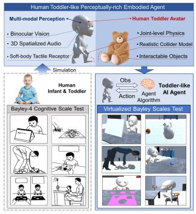
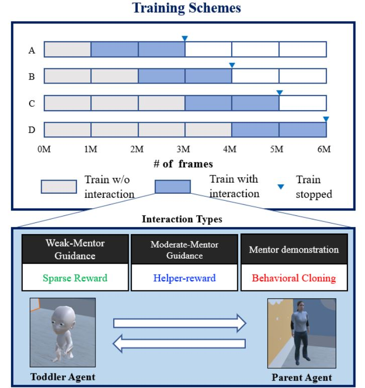
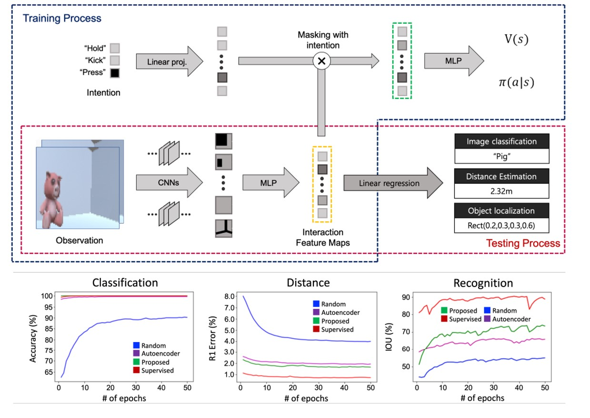

|
Kwanyoung Park
I'm an undergraduate in Seoul National University, actively engaged in research within the field of Reinforcement Learning (RL).
Currently, I am tackling offline RL problems at Yonsei University's RLLab under the guidance of Prof. Youngwoon Lee.
Previously, I have done a research internship at HCS Lab in Seoul National Univesity with Prof. Youngki Lee.
During that time, my focus was on bridging the gap between machine learning processes and human-like learning processes.
Additionally, I contributed to the development of NeRF models tailored for on-device applications.
Email /
CV /
LinkedIn /
Github /
Google Scholar
|
|
Research
The goal of my research is to bridge the gap between machine learning processes and human-like learning processes, focusing on improving data efficiency of reinforcement learning agents.
So far, I have explored the differences and similarities between reinforcement learning agents and cognition of human agents (toddlers).
Currently, I'm focusing on using offline data to accelerate the learning process of the agent.
|
|

|
VECA: A New Benchmark and Toolkit for General Cognitive Development
Kwanyoung Park*,
Hyunseok Oh*,
Youngki Lee
AAAI, 2022 (Oral Presentation)
paper /
code
VECA is a toolkit for general cognitive development of artificial cognitive agents.
It provides toolkit to build new tasks to train cognitive agents, and also a standardized benchmark to test the performance of the trained agents based on the Bayley-4 assessment.
|
|

|
Toddler-Guidance Learning: Impacts of Critical Period on Multimodal AI Agents
Junseok Park,
Kwanyoung Park,
Hyunseok Oh,
Ganghun Lee,
Minsu Lee,
Youngki Lee
Byoung-Tak Zhang
ICMI, 2021 (Oral Presentation)
paper /
code
We investigate the emergence of critical periods on multimodal reinforcement learning.
We show the performance on RL task and transfer learning depends on what and when the guidance is given to the agent.
|
|

|
Learning task-agnostic representation via toddler-inspired learning
Kwanyoung Park,
Junseok Park,
Hyunseok Oh,
Youngki Lee,
Byoung-Tak Zhang
NeurIPS Workshop, 2020
paper /
code
Toddler's learning procedure consists of interactive experiences, resulting in task-agnostic representations.
Inspired by those precedures, we pretrain the agent on a visual navigation task and show that the representations obtained during the RL task is expandable to various vision tasks.
|
|
Template from Jon Barron
|
|
{kind=link}